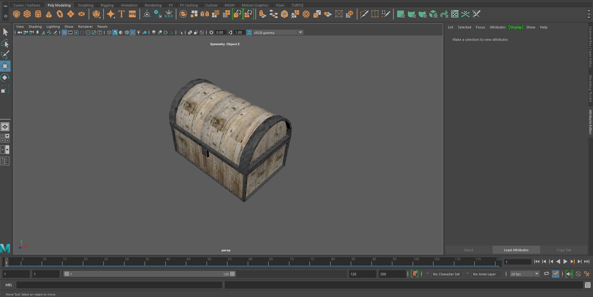
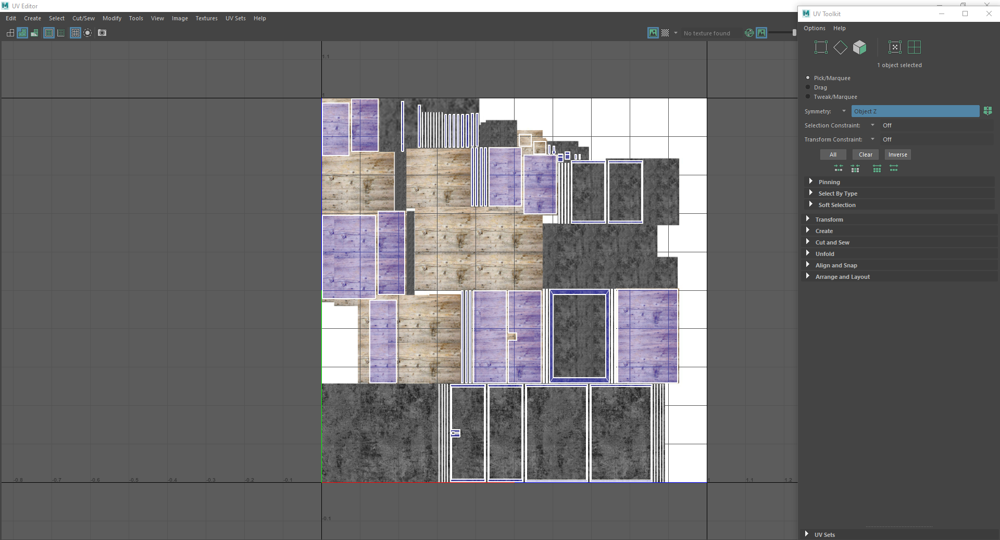
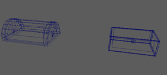
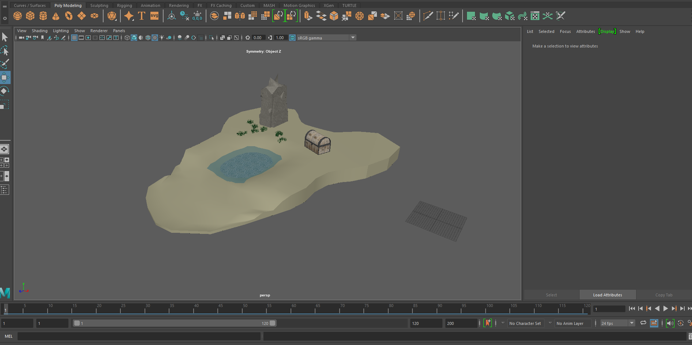

Within our second product unit, we were tasked to create a 3D model diorama of: an Island, Dungeon room or anything of your liking within Maya. We had to go through different plan elements like mind maps, the different assets we were going to use and many more
This is the final model of one of my assets; The Chest.
This is the process I went to wrap my chest in it's texture
If there was no colour or texture within my asset it would look like this
Here is the full island from a high angled view distance
How I went through the thought process and creation of my Island was by taking a look through the different Ideas I could use. Now I'm not very good at 3D modeling but I had stuck with the eaiser option to create a 3D model Island as it would be a cool intake on what my island would look like compared to others who have created theirs in the past. So once I had gotten my ideas into play with my Island I started off making different Ideas on what the assets should look like leaving me with; some grass, a chest and lastly a huge rock. With the colour schemes had made the sand a whiter yellow as it reflects sand in differnt parts of the world and the grass being a plain green. For the texturing of my chest and huge rock, With the chest I made a lighter wood orentation for the wooden parts of the model and a rough grey texture for the metal outline. While trying to organise where things go on the island I had chose to create a small lake within island close to the ocean that would surround the Island.